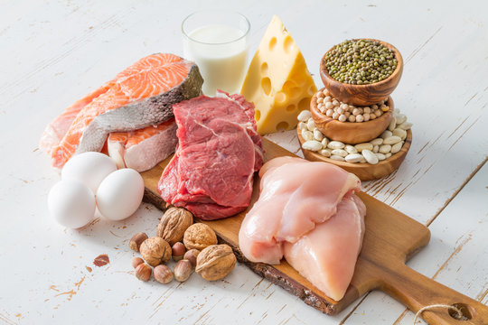
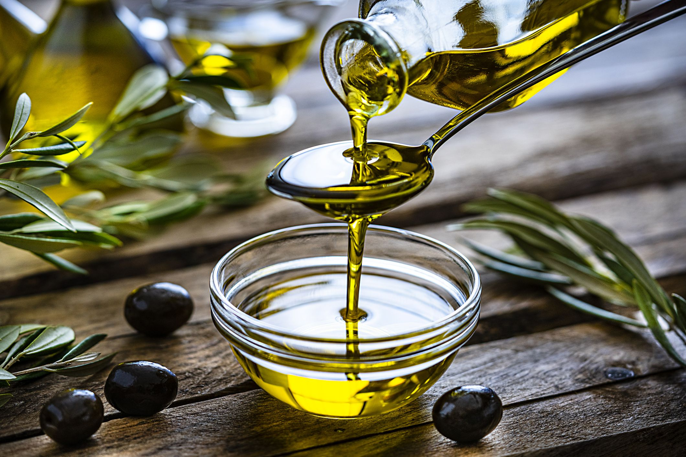
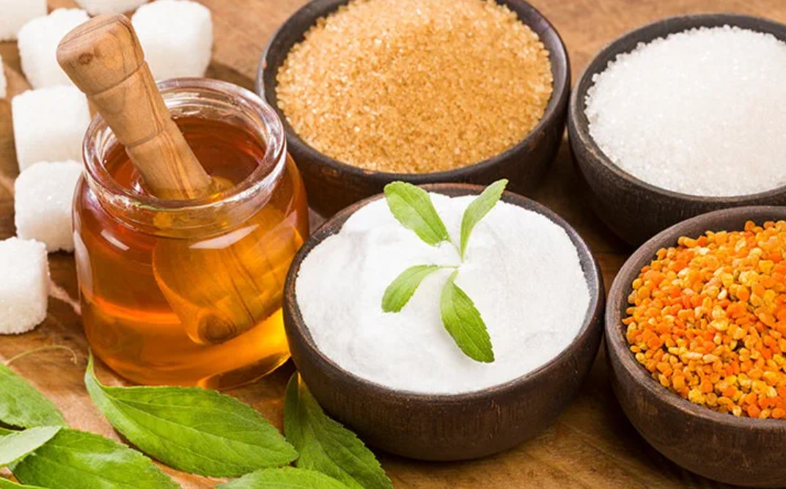
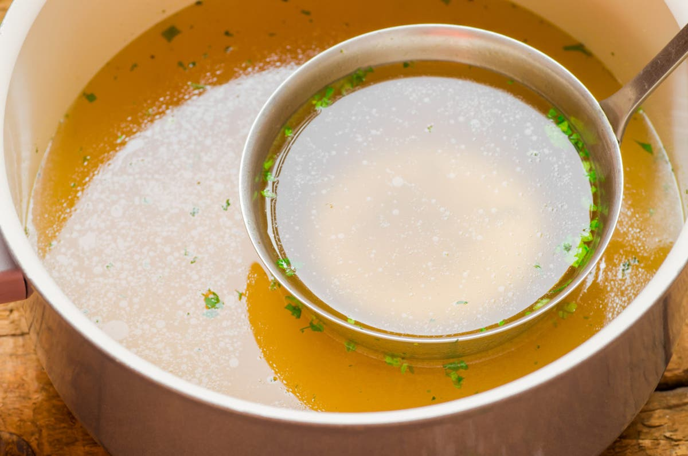

Ingredients
In the world of cooking, recipes vary widely, but there are essential ingredients that are common in most of them. Anyone learning to cook needs to know these basic ingredients. We'll highlight the key ingredients that appear in most meals, each dish typically includes one or two of them.
Proteins:

- ⇜ Meat (such as beef, chicken, no pork(keep it halal), lamb, etc.)⇝
- ⇜ Seafood (like fish, shrimp, scallops, etc.)⇝
- ⇜ Tofu or other plant-based protein substitutes⇝
Vegetables:

- ⇜ Onions⇝
- ⇜ Garlic⇝
- ⇜ Tomatoes⇝
- ⇜ Bell peppers⇝
- ⇜ Carrots⇝
- ⇜ Celery⇝
- ⇜ Leafy greens (spinach, kale, lettuce, etc.)⇝
- ⇜ Potatoes⇝
Grains:

- ⇜ Rice⇝
- ⇜ Pasta⇝
- ⇜ Quinoa⇝
- ⇜ Barley⇝
- ⇜ Bulgur⇝
- ⇜ Couscous⇝
Dairy:

- ⇜ Milk⇝
- ⇜ Cheese (cheddar, mozzarella, Parmesan, etc.)⇝
- ⇜ Yogurt⇝
- ⇜ Butter⇝
Fruits:

- ⇜ Lemons⇝
- ⇜ Oranges⇝
- ⇜ Apples⇝
- ⇜ Berries (strawberries, blueberries, raspberries, etc.)⇝
- ⇜ Bananas⇝
- ⇜ Avocados⇝
Herbs and Spices:

- ⇜ Salt⇝
- ⇜ Pepper⇝
- ⇜ Basil⇝
- ⇜ Oregano⇝
- ⇜ Thyme⇝
- ⇜ Rosemary⇝
- ⇜ Cumin⇝
- ⇜ Paprika⇝
- ⇜ Chili powder⇝
- ⇜ Curry powder⇝
Oils and Fats:

- ⇜ Olive oil⇝
- ⇜ Vegetable oil⇝
- ⇜ Butter⇝
- ⇜ Coconut oil⇝
Sweeteners:

- ⇜ Sugar⇝
- ⇜ Honey⇝
- ⇜ Maple syrup⇝
Liquids:

- ⇜ Water⇝
- ⇜ Broth (vegetable, chicken, beef, etc.)⇝
- ⇜ Wine⇝
- ⇜ Vinegar (balsamic, white, red wine, etc.)⇝